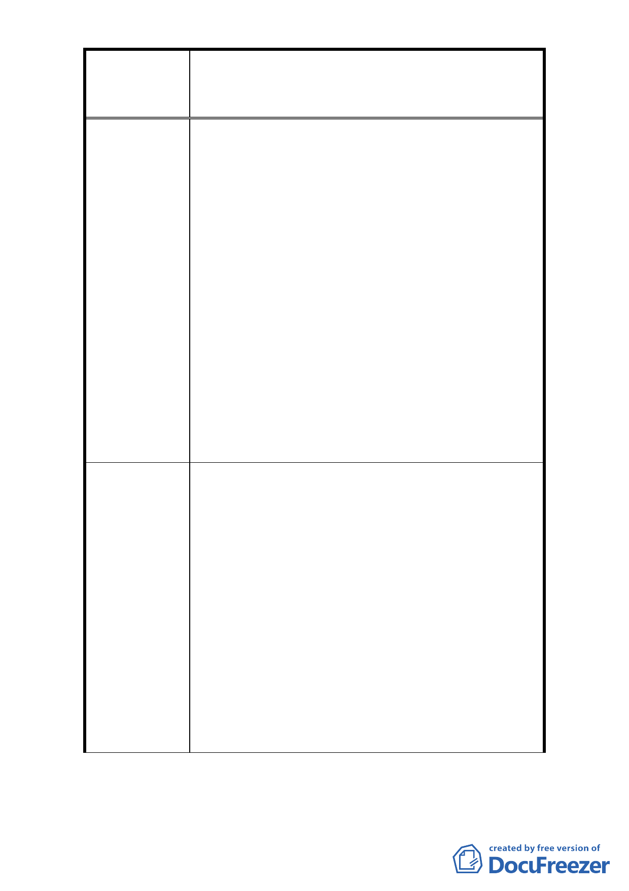

修訂臺北市大安區青田街保存區聚落風貌保存專用區細部計
案
名
畫、變更部分第三種住宅區、第三種商業區(特)為第三種住宅區
(特)(日式宿舍)及第三種商業區(特)(日式宿舍)暨劃定週邊地
區都市設計管制細部計畫案
是否也應擴大納入？更有甚者權臺北市之「日式宿
舍」是否均應納入？如或有「中式宿舍」是否更應
善加保存？(6)日本東京地區大樓林立，除了「日
本皇居」中有少數類似「日式宿舍」的建築外，也
未見特定的那個區塊劃為特別專用區，故請袞袞諸
公慎重行事勿入偏峰。
4. 龍安里原是一個安靜、無商業行為的美麗住宅區，
如今卻要修法允許 36 處的日式建築、歷史建築、
古蹟，其使用性質內容為文化產業產品銷售、文化
交誼、多功能表演、會議、研討開會等相關皆可使
用。如此一來，龍安里是否成為一個人潮擁擠的商
業區？尤其每逢假日將會有許多人湧入龍安里來
吃飯、喝茶（如青田街 7 巷 6 號茶藝館）、觀光、
看表演、看展覽、買東西……，請問交通停車問題、
治安問題及人潮所帶來的髒亂，是否有顧慮到？尤
其是居住緊鄰日式建築、歷史建築、古蹟旁的住戶
是何其可憐？私人用地已被諸多法令限制而損失
其權利，卻還要忍受未來的吵雜與治安的問題。
1. 請刪除對本里(住三)不平等的所有條款，以回復 96
年 7 月 30 日以前大安區龍安里(住三)原有的基本
權益。
2. 光復 65 年餘尚須保護日本文化可恥。
3. 本社區為一般性社區並不適宜以「文化資產保存
法」之聚落來規範，故只宜針對市定「古蹟」及「歷
建議辦法
史建築」加以一定程度的管制（即編號 1-9），其餘
位於「日式宿舍」內之古樹應另可加以適當保護即
可，如此，一來可達到保存保護「古蹟」與「參天
古樹」之目的與美意，二來亦可縮減範圍，減低擾
民及侵害私人產權，實為兩全其美的美事並請市府
發函感謝財產所有人保存保護古樹之美意。
4. 敬請禁止一切修法後的商業、文化活動，請讓龍安
里擁有原有的寧靜住宅品質！
- 30 -